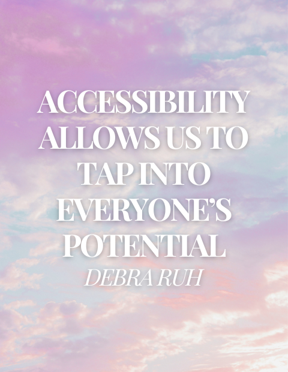

About Emma's Word Lab
Hi, I’m Emma, and I’m a freelance proofreader and copyeditor, using my keen eye for detail to make a positive impact in people’s lives.
In September 2022 I channelled my lifelong perfectionism and love for language into helping others on Fiverr with their work. I have since completed professional and certified training in both proofreading and copyediting and, as of September 2024, I have extended my services to individuals and organisations outside of Fiverr.
CVs and cover letters are my speciality, but don’t get it twisted, I will gladly sink my teeth into a wide range of texts, including works of fiction, articles, websites, and more! And, when it comes to those application materials, while I may not have expertise in my clients’ various fields and disciplines, you can rest assured that my years of experience have taught me the lexicon, standards, and expectations of certain professional and academic spheres.
When I am not working, you might find me cuddling my hamster, trying out new plant-based recipes in the kitchen, reading a good book, or listening to one of my favourite podcasts!

My primary goal is not to maximise my financial gain, but to make a meaningful impact. As a result, I set affordable prices that put food on the table, align with my skills and experience, fund the maintenance of my services (through professional and certified training), and pay for the upkeep of my website. However, I understand that many people who need my services most may not have the means to afford them.
To address this, I have established a 'pay it forward' scheme. Occasionally, I receive tips from clients who appreciate my work and express their gratitude through monetary contributions. I use all tips to finance work for people who cannot afford my usual service costs but have the greatest need. This work is provided free of charge for those who have demonstrated financial hardship, genuine need, and limited access to similar services.
If you believe you qualify, please fill out the form below. Within 72 hours of receiving your completed form, I will assess the information provided. If you are accepted onto the scheme, I will confirm your place on my waiting list and give you an estimate for delivery. My services within my accessibility scheme are not 'first come, first served'; instead, I organise my waiting list in accordance with case-by-case priority.
If you have the means and would like to contribute towards the scheme, please consider donating via the button below.
Frequently Asked Questions
Why should I work with you rather than AI?
While AI can spark inspiration and save you lots of time, it lacks a natural human voice. Working with a real human allows you to be confident that your work is the best it can be (and sounds like a real human wrote it). Trust me, most people can tell when something is written by AI.
What kind of clients do you work with?
I specialise in partnering with individuals to make a positive impact in people's lives. Whether that is by assisting an international student with their postgraduate CV, a recent graduate looking to secure their first job, or a professional looking for their next one, I am passionate about helping people through my work. I am also open to collaborating with businesses and non-profit organisations that share my values: compassion, an unconditional love for people, animals, and the planet; excellence, a pride in one’s work and a commitment to quality; and integrity, doing the right thing (even when no one is watching).
Is everything I have proofread kept confidential?
Absolutely, yes. I value integrity and trust very highly. You can rest assured that any personal or sensitive information, as well as any unpublished content, goes no further than my eyes, and I use it for no further purpose than helping you. If I am given express and written permission to, I may share your text (with any personal details and sensitive information redacted) as a sample of my work.
What is your working pattern? What are your turnaround times like?
As a freelancer, my working pattern is highly flexible. I also pride myself on prompt communication and respond to messages as soon as I can!
My turnaround times vary based on the complexity and length of the document, as well as my workload. Typically, a 600-word CV will be returned within 48 hours. Larger or more complex projects may take a few days or weeks, but I always provide an estimated delivery time after reviewing the material. Rest assured, I am committed to delivering high-quality work within the agreed-upon timeframe.
What is proofreading? What is copyediting?
A proofreader generally checks for errors in a text, including those related to grammar, punctuation, spelling, sentence structure, word choice, and consistency. Should this role align with your requirements, I am well-equipped to fulfil these tasks to an exceptional standard. However, if desired, I can do this and more: I can look at the text in context, ensuring that it fits its purpose; I can rephrase bits and pieces where needed (while preserving your voice); I can make suggestions on the style, structure, and format of the text; and I can provide insightful and knowledgeable guidance on how the text might be improved. When copyediting, I do not simply fix errors but enhance and refine your text.
Can I send my text back to you again?
Of course. Depending on the project, I often offer at least one revision. That is, you can send your text back to me and I can carry out another round of copyediting or proofreading. This is to ensure your utmost satisfaction with my service and confidence in your work. Often clients will have a round of copyediting and then a round of proofreading later on once they have implemented the changes they would like to make.
Do you have a minimum/service charge?
For services with fixed prices, there is no minimum charge, but if you're being charged my hourly rate, my minimum charge is half an hour. This is simply to ensure that every task and its associated responsibilities (e.g., consultations, invoicing admin) is worth the time!
How do I pay for your services?
I will issue an invoice as soon as the project is complete. This invoice will contain details on how payment can be made. Payment must be made within 30 days of receiving the invoice.
Do you have any kind of specialism?
I specialise in CVs, cover letters, and other application materials like personal statements. However, flexibility and adaptability are my strong suits, and I have experience editing various types of texts, including blog posts, articles, novels, letters, and websites.
What happens during the consultation phase, and does it take place over email or video call?
Most, if not all, the information that I'll need to get started on a project is outlined on my ‘Working Together’ page, and during consultation I'll ensure that we are both clear on all of these points (like language, expectations, etc.), as well as the price and timeline for the project.
I generally conduct all communication over email. However, if you wish to schedule a video call for a longer project, this can certainly be arranged!
Can you accommodate for tight deadlines?
I do accept projects with tight deadlines when my workload allows me to. I may charge an 'express delivery' fee.